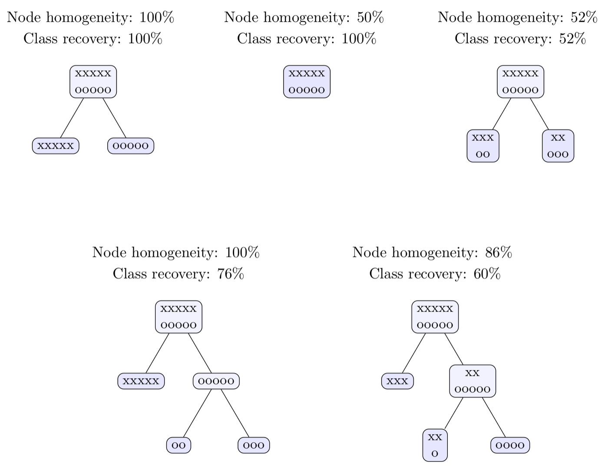
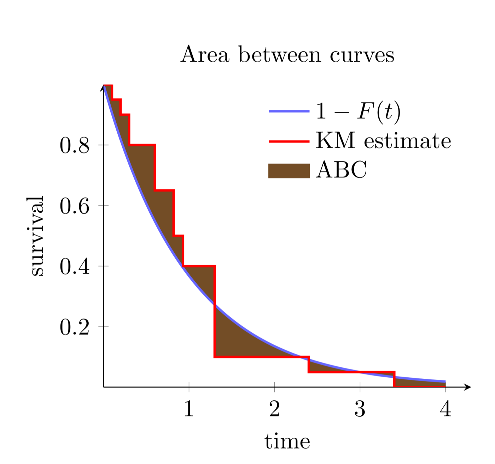
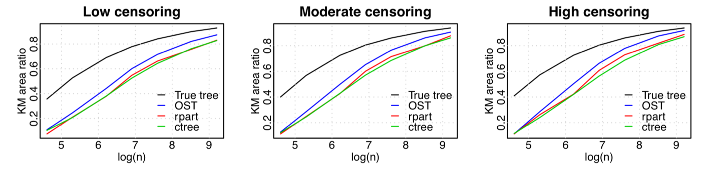
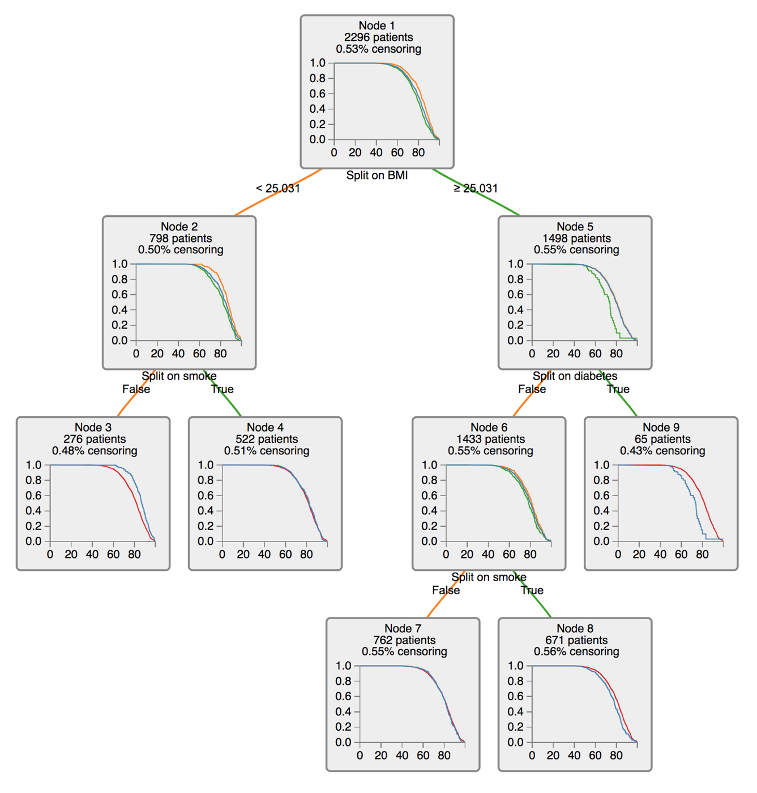

- クラスの回復率 92%学習データ 10,000 件、打ち切り中程度の合成データでの OST の値。rpart は 79%、ctree は 51% で、どちらもデータが増えるほど下がった（論文 Table 1）。
- KM 面積比 87.8%同じ条件で、葉のカプラン・マイヤー曲線が真の生存曲線にどれだけ近いかを、分岐のない木と比べた値。rpart は 84.8%、ctree は 77.4%（論文 Table 2）。
- 実データ 44 件で 5 指標とも平均が最上位UCI のデータに人工的な打ち切りを加えた比較。Uno の C、Brier の比 2 種では rpart・ctree との差が有意で、Cox の比と Harrell の C では有意でなかった（論文 Table 3）。
既存の生存木は打ち切りのある生存時間を扱えるが、分岐を上から1つずつ貪欲に決める
生存時間解析では、関心のある出来事（発症や死亡など）が起きるまでの時間を扱う。観察が途中で終わった人は「少なくともこの時点までは出来事が起きていない」ことしかわからない。これが右側打ち切りで、観察 \(i\) は最後に観察した時刻 \(t_i\) と、出来事が起きたか（\(\delta_i = 1\)）打ち切られたか（\(\delta_i = 0\)）の組で表される。よく使われる Cox 比例ハザード回帰は共変量の効果を線形に入れるので、非線形な効果や交互作用を見つけにくい。
生存木は共変量の空間を分割し、生存時間の分布が似た観察を同じ葉に集める。葉の生存分布はカプラン・マイヤー曲線などで要約する。ただし CART を含む多くの木の学習法は上から貪欲に分岐を選ぶので、ある分岐を選ぶときに、その下に来る分岐との組合せを考えない。公開ソフトウェアとして使いやすい生存木は、martingale 残差にもとづく rpart と、条件付き推測の検定にもとづく ctree（party パッケージ）の 2 つで、論文はこの 2 つを比較相手にする。
各葉の誤差をその葉のデータだけで計算できるように、比例ハザードモデルの尤度で当てはまりを測る
座標降下では、木の 1 か所を変えるたびに目的関数を計算し直す。各葉の誤差がその葉のデータだけで決まれば、変えた分岐の下の部分木だけを計算し直せば済む。そこで論文は子ノードどうしの差を最大にする分割規則（ログランク検定など）ではなく、1 つのノードの純度を測る規則を選び、LeBlanc と Crowley（1992）の尤度にもとづく方法を使う。観察 \(i\) の生存時間 \(S_i\) は、共通の累積ハザード \(\Lambda(t)\) を係数 \(\theta_i\) 倍した比例ハザードモデルに従うと仮定する。
\(\Lambda(t)\) は Nelson–Aalen 推定量 \(\hat\Lambda\) で置き換える。同じ葉 \(k\) に入る観察には共通の係数を使い、尤度を最大にする係数は、葉の中の出来事の数を累積ハザードの合計で割った値になる。
\(T(i)\) は観察 \(i\) が入る葉である。葉の誤差 \(\mathrm{error}_k\) は、観察ごとに別々の係数をもつ飽和モデル（\(\hat\theta_i^{\mathrm{sat}} = \delta_i / \hat\Lambda(t_i)\)）と比べた対数尤度の差である。木全体の誤差はこれを葉について合計したものになる。
木全体の目的関数が下がる限り、ノードごとに分岐の削除・付け替え・追加を試す座標降下を繰り返す
Optimal Trees の枠組みでは、木の誤差と複雑さの重みつき和を最小にする。複雑さは軸に平行な分岐なら分岐の数で、\(\alpha\) が当てはまりと木の大きさのバランスを決める。
この問題は混合整数最適化として書けるが、Optimal Trees はソルバーで厳密に解くのではなく、座標降下で解く。ノードをランダムな順に訪れ、内部ノードなら分岐を消すか、そのノードで最良の分岐に付け替える。葉なら新しい分岐を足す。目的関数が改善する変更は受け入れ、どの変更でも改善しなくなるまで繰り返す。こうして得られる木は局所最適解なので、ランダムに作った複数の初期木から始めて、目的関数が最も小さい木を選ぶ。複雑さの重み \(\alpha\) も、学習中に作られた複数の木を使って自動で調整する。論文はこの方法で実用的な時間内に「最適またはそれに近い解」が得られると述べるが、最適性の証明は与えていない。
OST はこの枠組みに上の生存時間の誤差を入れたものである。座標降下の各ステップで、葉ごとに \(\hat\theta_k\) を計算し直し、葉の誤差を合計して、変更を受け入れるかを決める。実装は Julia で、学術目的なら無料のライセンスで使えると論文は書いている。
真の木から生成した合成データで、木の構造をどれだけ復元したかと、生存曲線をどれだけ当てたかを別々に測る
生存モデルの既存の指標（Cox の部分尤度、Harrell と Uno の C 統計量、Brier スコア）は、木のように多くの観察が同じ予測値をもつモデルでは情報が少なく、ノードを増やすだけで値が上がることもある。論文の予備実験では 3 つのモデルを比べたとき、すべての指標で他より劣らないモデルが決まったのは約 30% の場合だけだった。そこで論文は生存分布を葉ごとに決めた「真の木」\(C\) からデータを生成し、学習した木 \(T\) を 2 つの面から評価する。
- 構造の復元：ノードの均質性（各葉に同じ真のクラスの観察がどれだけそろっているか）と、クラスの回復率（同じ真のクラスの観察がどれだけ同じ葉にまとまっているか）。前者は大きな木ほど、後者は小さな木ほど有利なので、2 つを並べて見る（図1）。
- 生存曲線の当てはまり：葉のカプラン・マイヤー曲線と真の生存曲線のあいだの面積（図2）を、分岐のない木での面積と比べた KM 面積比 \(\mathrm{AR} = 1 - \sum_i \mathrm{ABC}_i^{T} / \sum_i \mathrm{ABC}_i^{T_0}\)。AR は回帰の \(R^2\) のように、木を使うことでどれだけ精度が上がったかを表す。


合成データでは、OST はデータが増えるほど真の木に近づき、rpart と ctree はクラスの回復率が下がった
20,000 件、共変量 6 個（連続 3 個と、水準が 2、3、5 の離散 3 個）のデータを作り、深さ 3〜4 のランダムな真の木の葉に指数・Weibull・対数正規・ガンマのいずれかの生存分布を割り当てた。データセットは 1,000 個で、各 10,000 件をテストに取り分け、残りから学習データを \(n = 100\) から \(10{,}000\) まで 7 通り抜き出した。打ち切りの割合は 0〜80% の 9 段階で、低（0〜20%）・中（30〜50%）・高（60〜80%）にまとめて報告する。3 手法とも深さと複雑さを 5 分割の交差検証で選び、葉の最小の大きさは 5 件にそろえた。
既存の生存モデルの指標の平均では、3 手法ともデータが増えるほど成績が上がり、OST は一貫して他の 2 手法を上回った。構造の復元では違いがはっきり出た（表は打ち切り中程度の値）。ノードの均質性は 3 手法とも \(n\) とともに上がるが、クラスの回復率は OST が 88〜92% を保ったのに対し、rpart は 90% から 79% に、ctree は 78% から 51% に下がった。論文はこの傾向から、貪欲な 2 手法はデータが増えても真の木に確実に収束するとはいえないと述べる。データが大きいとき、OST の葉の数は真の木（平均 6 個）とほぼ同じで、rpart と ctree の木はやや大きかった。
| 学習データの件数 \(n\) | 100 | 500 | 1,000 | 5,000 | 10,000 |
|---|---|---|---|---|---|
| OST | 37 / 92 | 59 / 88 | 70 / 89 | 85 / 92 | 89 / 92 |
| rpart | 38 / 90 | 55 / 84 | 65 / 82 | 77 / 80 | 84 / 79 |
| ctree | 40 / 78 | 57 / 70 | 67 / 63 | 83 / 53 | 86 / 51 |
ノードの均質性 / クラスの回復率（%）、打ち切り中程度。論文 Table 1（arXiv v1）から 5 列を抜き出した。
生存曲線の当てはまり（KM 面積比）でも OST が全般に良かったが、データが小さいときの差は小さい（打ち切り中程度、\(n = 100\) で OST 11.01%、rpart 10.61%、ctree 7.74%、\(n = 10{,}000\) で 87.77%、84.84%、77.44%）。真の木でさえ小さなデータでは曲線の推定が粗いので、葉をカプラン・マイヤー曲線で要約するなら、葉の最小の大きさを 50 件以上にする必要があるかもしれない、と論文は述べる。別々の学習データで作った 2 本の木の似ている度合いや、学習データに雑音を加えた実験でも、大きなデータでは OST が最も安定し、雑音による成績の低下は 3 手法で同程度だった。

UCI の 44 個のデータに人工的な打ち切りを加えた比較では、5 つの指標すべてで OST の平均が最も高く、3 つでは差が有意だった
連続の目的変数をもつ UCI のデータ 44 個（63 件から 100,000 件、特徴量は最大 383 個）に、合成データと同じ方法で 0〜80% の打ち切りを加え、半分を学習、半分をテストに使った。木の深さは 7 まで許した。真の生存分布はわからないので、ここでは既存の 5 指標で比べる。
| 指標 | OST | rpart | ctree | p（対 rpart） | p（対 ctree） |
|---|---|---|---|---|---|
| Cox の比 | 0.1118 | 0.1091 | 0.1090 | 0.2288 | 0.2222 |
| Harrell の C | 0.7873 | 0.7866 | 0.7818 | 0.4355 | 0.1045 |
| Uno の C | 0.6650 | 0.6523 | 0.6441 | 0.0288 | 0.0013 |
| Brier の比（1 時点） | 0.3841 | 0.3627 | 0.3516 | 0.0001 | < 10−5 |
| 積分 Brier の比 | 0.4451 | 0.4262 | 0.4231 | 0.0135 | 0.0055 |
平均スコアと、OST の方が高いという片側の対応のある t 検定の p 値。論文 Table 3（arXiv v1）。
他の 2 手法のどちらにも劣らなかった場合の割合は、指標によって OST が 48.7〜59.3%、rpart が 27.3〜33.3%、ctree が 33.6〜38.4% だった（同点があるので合計は 100% にならない。論文 Table 4）。
Framingham 心臓研究のデータでは、OST は貪欲法と同じ変数を使いながら、しきい値と分岐の順序を変えた木を作った
冠動脈疾患と診断された Framingham 心臓研究の参加者（元のコホートと子孫のコホート）について、心筋梗塞または脳卒中が起きるまでの時間を、性別、喫煙、収縮期・拡張期血圧、降圧薬の使用、BMI、糖尿病から予測した。OST の木は最初に BMI 25.031 で分け、BMI が低い群は喫煙で、高い群は糖尿病で分け、糖尿病のない群をさらに喫煙で分けた（図4）。論文は、BMI 25 が NIH の過体重の基準と一致すること、リスクが最も高いのは糖尿病のある過体重の群だったことを挙げ、これらの分岐は既知の危険因子と整合すると述べる。
同じデータで rpart の木は BMI の分岐 1 つだけだった。ctree の木は OST と同じ変数を使ったが、BMI のしきい値は貪欲に分けたときに局所的に最良な 24.117 で（rpart も同じ値）、OST は 25.031 を選んだ。また ctree は過体重の群を先に喫煙で、次に糖尿病で分けた。貪欲法は一度決めた分岐を見直さないので、順序を入れ替えた方が木全体として良くなることに気づけない、と論文は説明する。論文が報告した Brier スコアは OST 0.0486、rpart 0.0249、ctree 0.0467 だった。

OST は最適性を証明する手法ではなく、木全体の目的関数を局所探索で改善する手法を生存時間に広げたものである
- 解き方：混合整数最適化の定式化から出発するが、実際には OCT と同じ座標降下（複数の初期木からの局所探索）で解く。動的計画法や MIO ソルバーの系統と違い、得られた木が最適だという証明はない。
- 目的関数：分類の誤分類率の代わりに、比例ハザードモデルの尤度にもとづく葉ごとの誤差を使う。葉ごとに独立に計算できることが、座標降下で何度も計算し直すための条件になっている。
- 評価：真の木を使う合成データの指標（ノードの均質性、クラスの回復率、KM 面積比）を提案し、既存の指標が食い違う問題を避けて比較している。
@article{bertsimas2022optimal,
title = {Optimal survival trees},
author = {Bertsimas, Dimitris and Dunn, Jack and Gibson, Emma and Orfanoudaki, Agni},
journal = {Machine Learning},
volume = {111},
number = {8},
pages = {2951--3023},
year = {2022},
doi = {10.1007/s10994-021-06117-0}
}
ページの内容と数値は arXiv 2012.04284 v1（2020 年 12 月 8 日）による。出版版（Machine Learning、2022 年）の本文は確認していないので、数値や図が出版版と異なる可能性がある。書誌情報は Crossref による。所属は arXiv 版の表記。